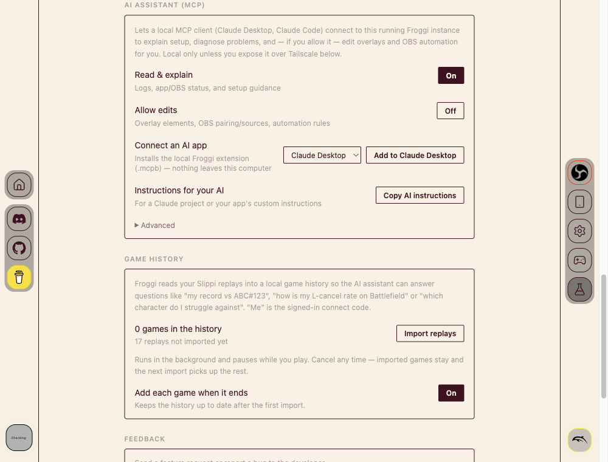

Built-in MCP server
Connect Claude, Cursor or VS Code and build overlays, flows and your OBS setup by chatting.


What it does
Connect an AI app like Claude to Froggi and it sees your running app: overlays, OBS, flows and logs. Then ask in plain words:
- "Build me an Ultimate-style HUD for a 4:3 game window."
- "Make a flow that flashes my lights when I lose my last stock."
- "Set up stage striking for a doubles set."
- "Add my overlay to OBS."
It explains first and changes things when you ask.